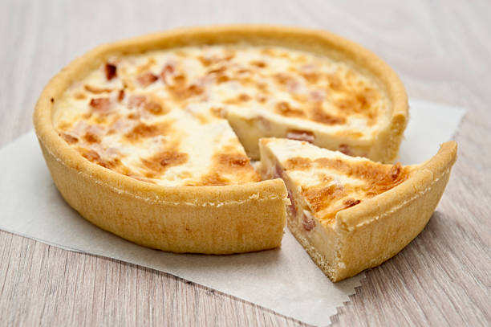

Bienvenue à "Quche", le restaurant incontournable de quiches dans le 12ème arrondissement de Paris !
Situé au cœur de l'un des quartiers les plus animés de la capitale, "Quche" est l'endroit parfait pour les amateurs de quiches savoureuses et délicieuses. Notre restaurant se distingue par son ambiance chaleureuse et conviviale, son service attentionné et, bien sûr, ses quiches exceptionnelles.
Notre menu propose une large sélection de quiches préparées avec passion et créativité. Que vous soyez un adepte des quiches traditionnelles ou à la recherche de nouvelles saveurs audacieuses, nous avons de quoi satisfaire tous les palais. Notre équipe de chefs talentueux et passionnés travaille avec des ingrédients frais et de qualité pour créer des quiches savoureuses qui fondent dans la bouche.
Vous pourrez trouver sur notre carte des classiques intemporels tels que la quiche lorraine, avec sa garniture riche en bacon fumé et en fromage fondant. Pour ceux qui préfèrent les saveurs de la mer, nous proposons une quiche aux fruits de mer délicieusement parfumée. Si vous êtes plutôt végétarien, vous serez enchanté par notre quiche aux légumes de saison, pleine de couleurs et de saveurs. Nous proposons également des options sans gluten pour répondre aux besoins spécifiques de nos clients.
Chez "Quche", nous mettons un point d'honneur à utiliser des ingrédients frais et locaux autant que possible. Nous nous approvisionnons auprès de fournisseurs de confiance qui partagent notre engagement envers la qualité. Cela se reflète dans chaque bouchée que vous prendrez chez nous.
Notre équipe de serveurs attentionnés et professionnels est là pour rendre votre expérience encore plus agréable. Ils se feront un plaisir de vous guider à travers notre menu, de vous recommander les meilleures combinaisons de saveurs et de répondre à toutes vos questions. Nous croyons en un service de qualité et en une expérience culinaire inoubliable.
Outre nos quiches délicieuses, nous offrons également une sélection de salades fraîches et de soupes réconfortantes pour accompagner votre repas. Et n'oublions pas nos desserts alléchants qui sauront satisfaire votre dent sucrée.
"Quche" est le lieu de rendez-vous incontournable pour tous les amateurs de quiches dans le 12ème arrondissement de Paris. Nous vous invitons à venir découvrir notre univers culinaire unique et à savourer nos quiches exquises. Nous avons hâte de vous accueillir chez "Quiche Delight" pour une expérience gustative mémorable.
Robert, notre chef cuisinier passionné chez "Quche", apporte son expertise et sa créativité à chaque plat. Avec des années d'expérience, il explore de nouvelles combinaisons de goûts et d'ingrédients pour offrir des quiches uniques à nos clients. Originaire de la région française réputée pour sa cuisine, il puise son inspiration dans les traditions culinaires tout en apportant une touche moderne et innovante à ses créations.
Robert, doté d'un palais raffiné, crée des quiches savoureuses qui sont un véritable régal pour les papilles. En tant que leader inspirant, il encourage la créativité et maintient des normes élevées en matière de qualité et de présentation des plats. Sa passion contagieuse et son dévouement envers l'art culinaire font de lui un atout précieux pour "Quche".
Quche
Rue du Fromage, 123 75012 Paris, France
Tel: 01 45 67 89 00
Quche
Avenue de la Pâte Feuilletée, 456 75012 Paris, France
tel: 01 45 55 55 55